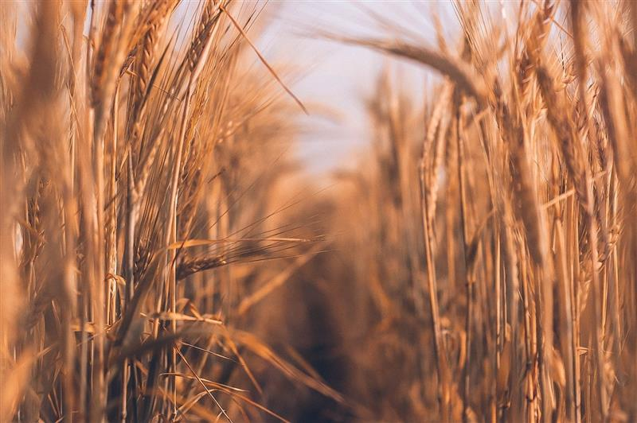

Seed savers: how the US is looking to Syria for ancient wisdom in nature
Food-growing areas around the world face new challenges as a result of climate change. This Syria-US project highlights one potential solution: reaching deep into the history of plants
Words by
Lucy Purdy November 8, 2018
Sickle in hand, this Syrian man harvests wheat as the sun begins to fall. He stands in a field near the village of al-Bahariyah, in the eastern Ghouta region on the outskirts of the capital Damascus. Six thousand miles away in a greenhouse in Kansas, researchers watch as a cloud of Hessian flies works on destroying 20,000 trial seedlings.
But one species among the samples remains untouched: an ancient Syrian grass known as Aegilops tauschii.
Discover a world of inspiration
Subscribe to Positive News magazine

Seeds from this wild grass that were once stored in a seed bank in Tal Hadya, 25 miles west of the largely destroyed city of Aleppo, have made their way to the US. As temperatures rise, pests and diseases are moving north into America’s cereal and grain heartland, diminishing yields and sometimes decimating crops.
Smuggled out of Syria as the bombs fell, Aegilops tauschii seeds could now help US wheat survive the hotter and drier conditions triggered by climate change. Today’s domesticated wheat originated from Syria and neighbouring countries in the ‘fertile crescent’. So it stands to reason that the seeds stored there are embedded with survival strategies developed over thousands of years.
Seeds from Syria could help US wheat survive the hotter and drier conditions triggered by climate change. Image: Artur Nasyrov
According to environmental journalist Mark Schapiro, writing for the Yale School of Forestry and Environmental Studies: “Those so-called ‘crop wild relatives’ are turning out to be critical tools for breeders as food-growing areas around the world face an unprecedented spectrum of new conditions.”
The Syria-US project could form a blueprint for breeders of other crops. It’s a hint to reach deep into the history of plants, in search of lost characteristics that could prove crucial in a rapidly changing world.
Image: Amer Almohibany/AFP/Getty